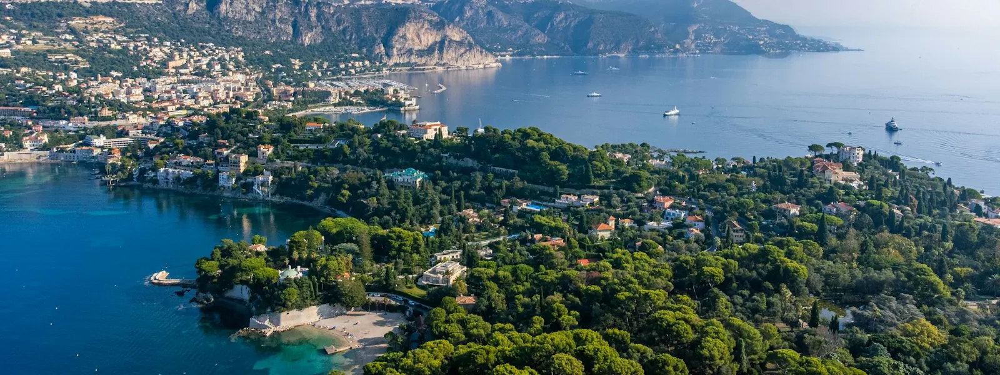
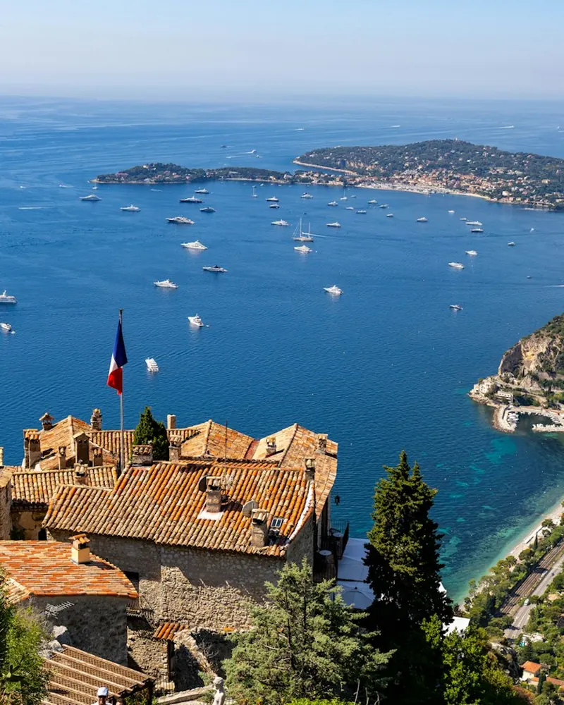

Dépannage informatique à Villefranche-sur-Mer, Beaulieu et Saint-Jean-Cap-Ferrat
Entre Nice et Monaco, nous intervenons dans les appartements, les villas et les résidences secondaires de la Riviera : Wi-Fi qui porte jusqu'au jardin, box et TV installées avant votre arrivée, dépannage rapide quand quelque chose ne va pas, en français ou en anglais.

Un Wi-Fi qui porte jusqu'au jardin
Murs épais, plusieurs niveaux, jardin en terrasses : les belles demeures de la Riviera sont rarement couvertes par une seule box. Nous concevons un réseau qui fonctionne partout, de la cuisine au bord de la piscine.
- Wi-Fi maillé intérieur et extérieur
- Réseau invité séparé pour vos hôtes et le personnel
- Caméras, interphone et objets connectés sécurisés

Tout est prêt à votre arrivée
Beaucoup de propriétaires ne sont présents qu'une partie de l'année. Nous prenons le relais pour que tout soit prêt à votre arrivée, et que rien ne se dérègle pendant votre absence.
- Installation et vérification avant votre séjour
- Assistance à distance où que vous soyez
- Coordination avec votre gardien ou votre conciergerie
Nos services informatiques à Villefranche, Beaulieu et Cap-Ferrat
Particuliers, hôtels, restaurants et commerces : voici les interventions que l'on nous demande le plus souvent sur la Riviera.
Pour les particuliers
- Ordinateur lent ou qui plante à Villefranche, Beaulieu et Cap-Ferrat
- Virus, pop-ups et arnaques à Villefranche, Beaulieu et Cap-Ferrat
- Installation box internet et Wi-Fi à Villefranche, Beaulieu et Cap-Ferrat
- Récupération de données à Villefranche, Beaulieu et Cap-Ferrat
- Installation et gestion antivirus à Villefranche, Beaulieu et Cap-Ferrat
Pour les entreprises
- Maintenance informatique à Villefranche, Beaulieu et Cap-Ferrat
- Téléphonie VoIP à Villefranche, Beaulieu et Cap-Ferrat
- Microsoft 365 et messagerie pro à Villefranche, Beaulieu et Cap-Ferrat
- Sauvegarde des données à Villefranche, Beaulieu et Cap-Ferrat
- Cybersécurité à Villefranche, Beaulieu et Cap-Ferrat
Hôtels, restaurants et commerces de la Riviera
Entre Villefranche, Beaulieu et Saint-Jean-Cap-Ferrat, l'activité vit au rythme des saisons. Quand la caisse ne répond plus, que le Wi-Fi des clients tombe ou que la messagerie bloque en plein mois d'août, chaque heure compte.
Nous assurons la maintenance des postes, des caisses et des imprimantes, la mise en place d'un Wi-Fi clients séparé et sécurisé, la messagerie professionnelle et les sauvegardes. Avec un contrat de maintenance, vous êtes prioritaire, et une grande partie des problèmes se règle à distance en quelques minutes.
- Postes, caisses et imprimantes
- Wi-Fi clients séparé du réseau de gestion
- Messagerie et sauvegardes
- Téléphonie et standard
Villefranche, Beaulieu, Cap-Ferrat : vos questions
Pouvez-vous couvrir toute une villa en Wi-Fi, jardin et piscine compris ?
Oui. Nous mesurons la couverture, puis installons un système Wi-Fi maillé ou des bornes extérieures adaptées. Le réseau porte jusqu'à la terrasse et au pool house, avec un seul nom de réseau partout.
Nous ne sommes là que quelques mois par an : comment faire ?
Nous préparons l'installation avant votre arrivée, vérifions que tout fonctionne et restons joignables à distance pendant votre séjour comme pendant votre absence. Nous pouvons travailler avec votre gardien ou votre conciergerie.
Intervenez-vous rapidement depuis Nice ?
Oui, Villefranche et Beaulieu sont à une quinzaine de minutes de notre base. Une prise en main à distance est souvent possible le jour même.
Intervenez-vous en anglais ?
Oui, nous intervenons en français ou en anglais, ce qui facilite les échanges avec les propriétaires étrangers et leur personnel. Yes, English-speaking IT support is available.
Gérez-vous aussi les caméras et objets connectés ?
Oui : caméras Wi-Fi, interphones connectés, enceintes, téléviseurs et thermostats sont connectés et sécurisés sur un réseau adapté.
Intervenez-vous aussi à Èze et Cap-d'Ail ?
Oui, Èze, Èze-bord-de-mer, Cap-d'Ail et La Turbie font partie de notre zone d'intervention principale, tout comme Monaco.
Nous intervenons aussi près de chez vous

Un souci informatique sur la Riviera ?
Nous intervenons rapidement entre Nice et Monaco, à domicile ou à distance.